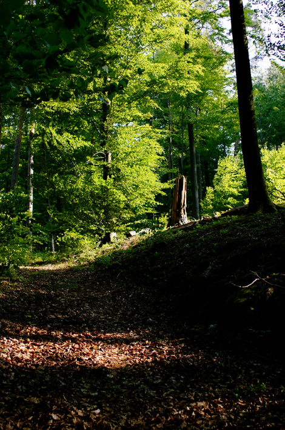
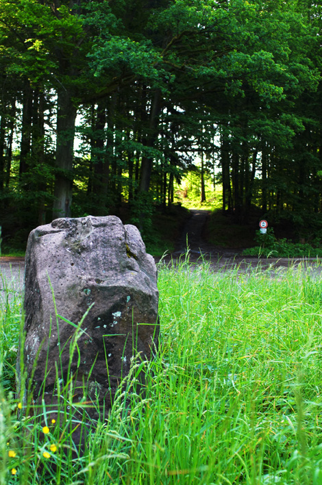
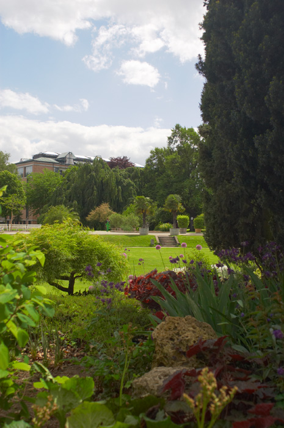
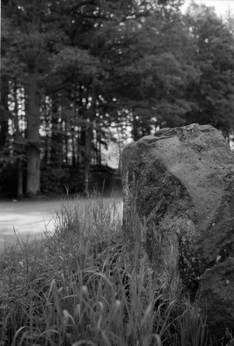
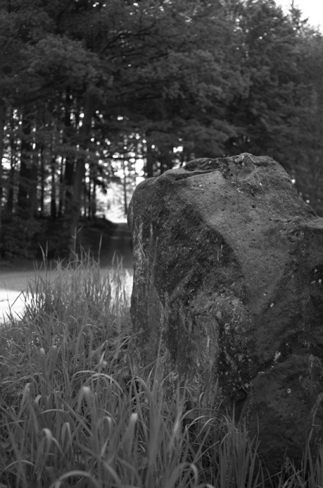
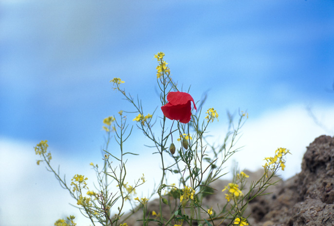
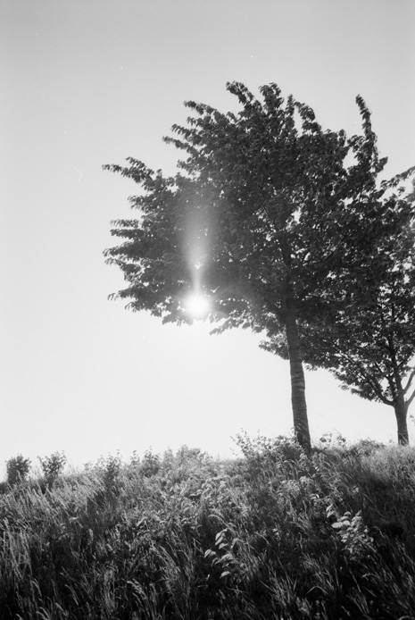
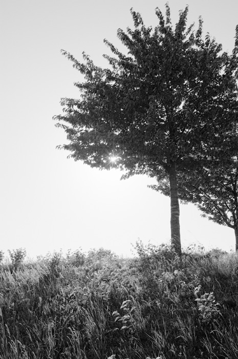

Nikon D70 and Velvia100F (Leica)
Небольшое сравнение парных снимков
|  | |
| 08_Cp_002_0013.jpg LeicaM 2,0/35 Summicron-M Asph. |
08_DSC7199.jpg Обработка в C1Pro, немного увеличен контраст S-образной кривой для приближения к пленочному виду, наведите мышку на фотографию, что бы посмотреть оригинал CZ T* Distagon 2.8/25 |
|  | |
| 07_Cp_002_0009_4000a.jpg LeicaM 2,0/35 Summicron-M Asph. |
07_dxo_film_DSC7184.jpg Обработка в C1Pro, затем film pack plugin от DxO, немного увеличен контраст S-образной кривой для приближения к пленочному виду. Авторская редакция (вручную, без DxO plugin ) - наведите мышку на фотографию CZ T* Distagon 2.8/25 |
 |
 | 06_DSC7219.jpg LeicaM 2,0/35 Summicron-M Asph. |
06_dsc7219_tonemapped1.jpg Обработка в C1Pro, разница просто драматическая, путем довольно сложного редактирования её можно улучшить - наведите мышку на фотографию CZ T* Distagon 2.8/25 |
|
|
|
| 0c_Cp_002_0005_ToneMapped.jpg Сложный слайд с очень глубокими тенями, использован Tone mapping для их осветления LeicaM 2,0/35 Summicron-M Asph. |
0c_DSC7168.jpg Обработка в C1pro, путем довольно сложного редактирования её можно улучшить - наведите мышку на фотографию, но достигнуть вида слайда не удается CZ T* Distagon 2.8/25 |
|  |  |
| 01_BW_043_0004.jpg LeicaM 2,0/35 Summicron-M Asph. |
01_dsc7103.jpg CZ T* Distagon 2.8/25 |
|  | |
| 0b_cp_002_0037.jpg LeicaM 2,8/90 Elmarit-M |
0b_dsc7262.jpg CZ T* Distagon 2.8/25 |
|  |  |
| 0e_bw_043_0034.jpg LeicaM 2,0/35 Summicron-M Asph. |
0e_dsc7153.jpg CZ T* Distagon 2.8/25 |
All contents copyright © vgrin, first published July 13(Friday), 2007. Ver 1.04